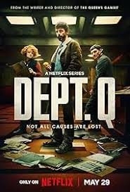
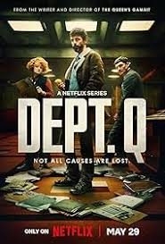

კინო უფრო მეტია, ვიდრე უბრალოდ სიუჟეტი ეკრანზე — ეს არის ემოციების, მოგონებებისა და თავგადასავლების სამყარო. სწორედ ამიტომ, ჩვენი საიტი შეიქმნა მათთვის, ვინც ფილმებს თვალებით კი არა, გულით უყურებს. აქ იპოვი ფილმის მიმოხილვებს, სიახლეებს, რჩეულ რეკომენდაციებს და დაუვიწყარ დეტალებს, რომლებიც ნებისმიერ სიუჟეტს ახალ სიმაღლეზე აჰყავს.
აირჩიეთ ფილმი:
 
